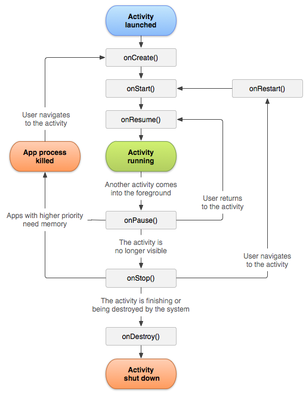

What is the type of the result?
(0..10)
.map { i -> "Joe $i" }
.filter { j -> j.length > 2 }
.map { a -> a.length }
a. List<Int>
b. List<String>
c. Int
d. String
What is the type of the result?
(0..10)
.map { s -> s.toString() }
.filter { j -> j.length > 2 }
.map { a -> a.toUpperCase() }
a. List<Int>
b. List<String>
c. Int
d. String
What is the type of the parameter?
fun View(
onEvent: //????
) {
var x = "Hello World"
var i = 0
...
i = onEvent(i, x)
}
a. (Int, String) -> String
b. (String, Int) -> String
c. (String) -> Int
d. (Int, String) -> Int
Activities are destroyed and recreated whenever a configuration change occurs, such as an orientation change.

The Android Framework provides the ViewModel class for managing UI-related data.
class MyViewModel : ViewModel() {
val name: MutableState<String> = mutableStateOf("")
}
Important: You can on use the viewModels() function inside an Activity
override fun onCreate(...) {
setContent {
val vm: MyViewModel by viewModels()
...
MainScreen(
vm,
...
)
}
}
class MyViewModel : ViewModel() {
private val _name: MutableState<String> = mutableStateOf("")
val name: State<String> = _name
fun setName(name: String) {
_name.value = name
}
}
@Composable
fun Main() {
val vm: MyViewModel by viewModels()
MainScreen(
name=vm.name,
onNameChange=vm::setName
)
}
Different resources can be loaded based on the orientation of the device.
Different composables can be loaded by querying the orientation at runtime.
In order to determine the orientation, you need to access the Configuration. Do so through the LocationConfiguration.current variable.
@Composable
fun View() {
val configuration = LocalConfiguration.current
...
}
Then you can access the configuration’s orientation property and compare it to a few constants.
configuration.orientation == Configuration.ORIENTATION_PORTRAIT
A tool for passing data down through a composition implicitly